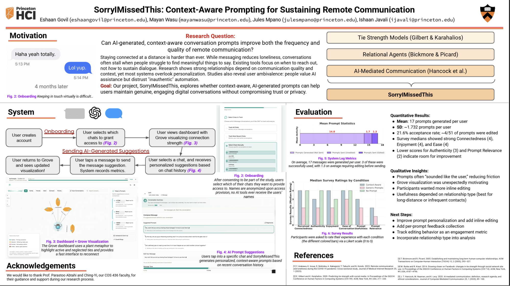
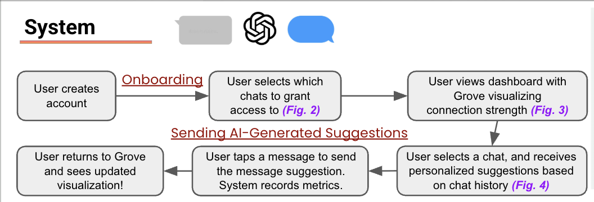
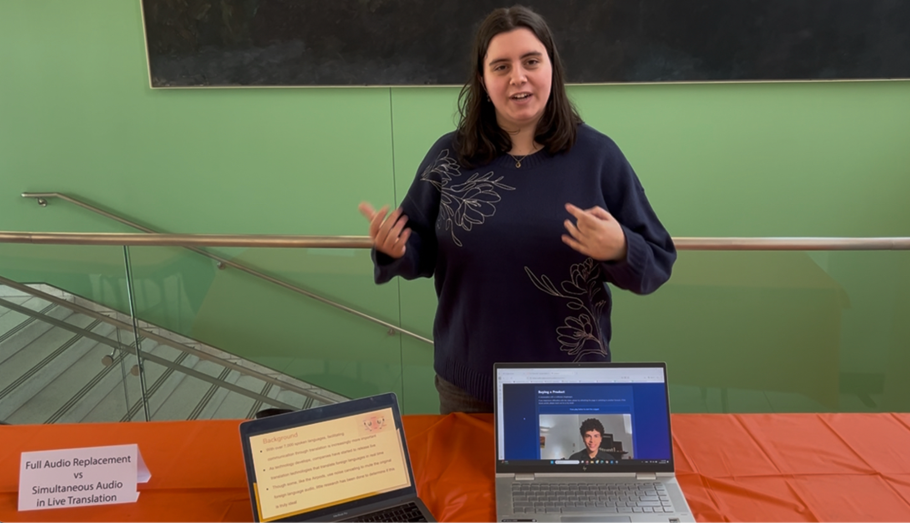
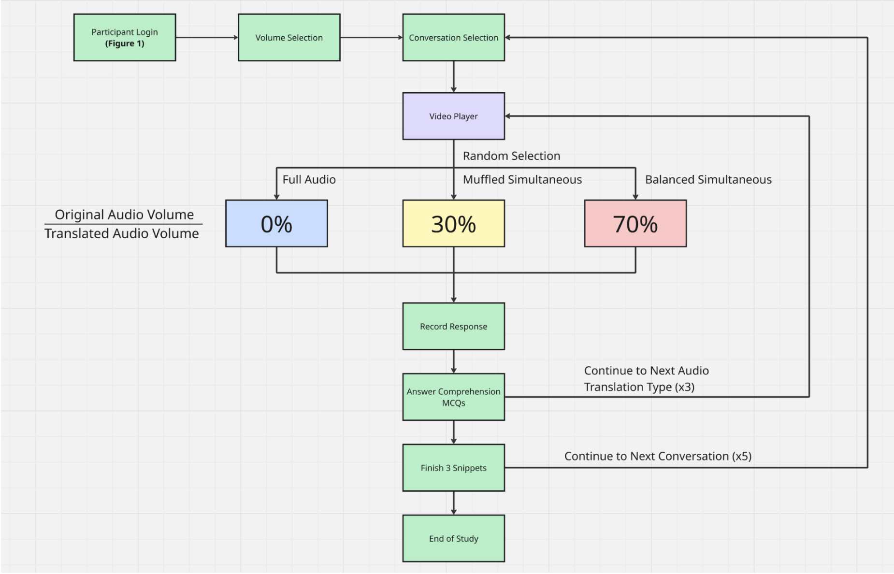
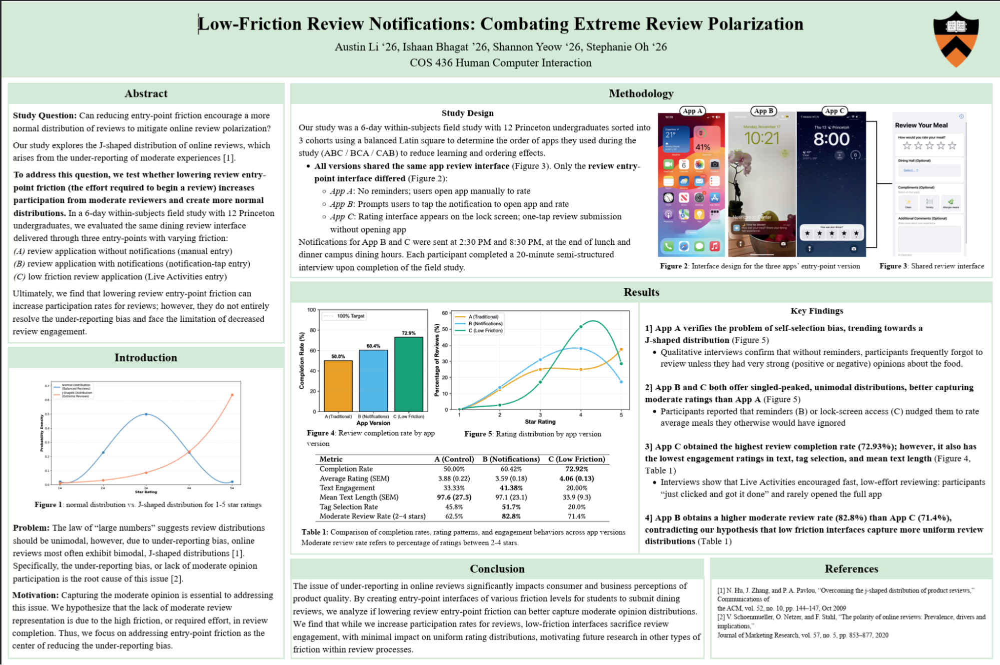
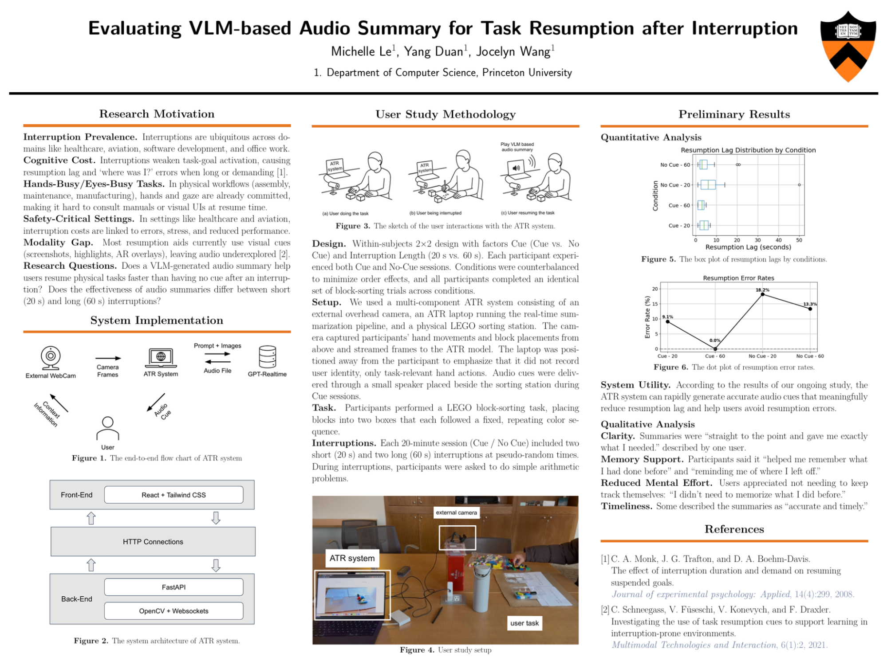
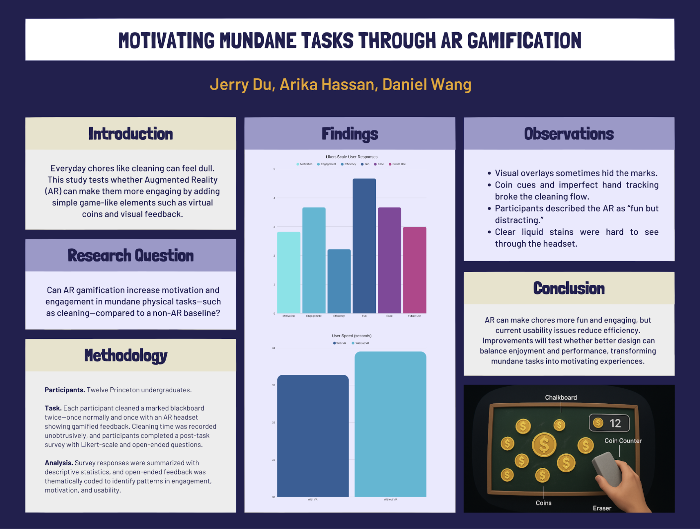
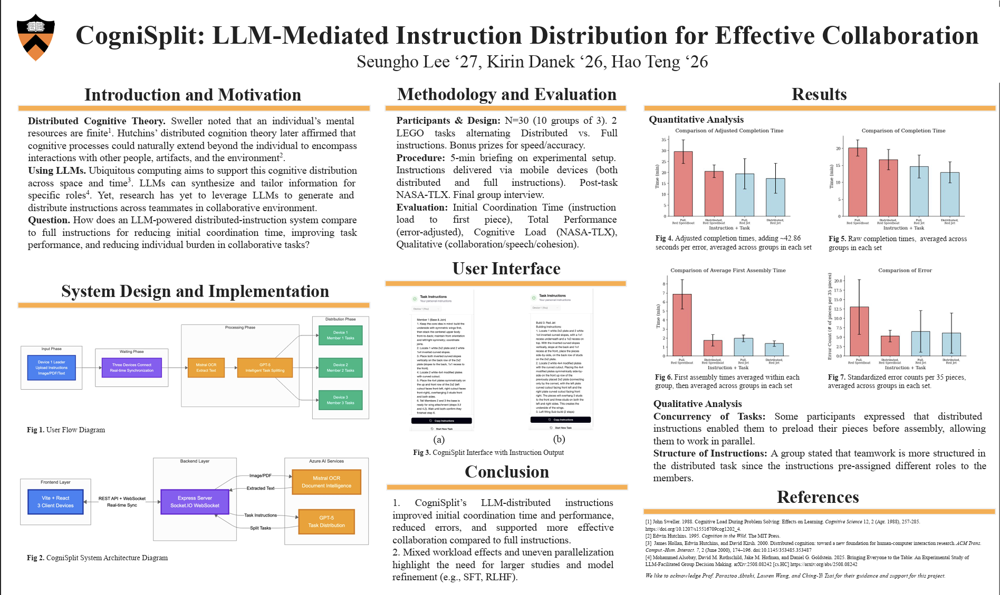

Interactive systems and studies built and evaluated by student teams.
Sorry I Missed This!
Maintaining long-distance relationships—friends, partners, and family—often
suffers from stalled conversations and the awkwardness of not knowing how
to restart them. Sorry I Missed This! explores whether AI-generated,
context-aware conversation prompts can make remote communication easier,
more frequent, and more authentic. The system analyzes message history
and relevant life events to surface personalized suggestions that feel
natural rather than templated. The project investigates how these prompts
influence message frequency, perceived sincerity, and users' trust in
AI-mediated communication.



Mayan Wasu, Ishaan Javali, Eshaan Govil, Jules Mpano
Full Audio Replacement vs Simultaneous Audio in Live Translation
Real-time translation devices increasingly mediate face-to-face
communication, yet their audio-mixing design choices—full replacement or
simultaneous mix—remain understudied. This project compares
full audio replacement (hearing only the translated track) with
simultaneous audio (quiet original + translation) using a custom-built
translation video system. Through controlled experiments, the team measures
comprehension, cognitive load, tone perception, and non-lexical cue
recognition across conditions. Results suggest no universally optimal
setting; instead, users vary widely, motivating translation tools that
expose customizable mixing controls rather than a rigid default.


David Wang, Sofia Marina, Anupta Argo, Michael Huang
Food Waste Score
Many households underestimate how much edible food they throw away,
leading to invisible but significant waste. Food Waste Score is an
interactive system that lets users log discarded food and receive an
easy-to-interpret score summarizing their waste patterns. The tool
provides reflective prompts and gentle suggestions for meal planning or
storage improvements. The team conducted a pilot deployment at a
Princeton eating club, exploring whether lightweight self-tracking can
shift awareness and support more sustainable habits in communal dining
environments.
Ayodeji Olusanya, James Swinehart, Luke Helstrom, Hidde Lycklama
Low-Friction Review Notifications: Combatting Extreme Review Polarization
Online platforms suffer from polarized reviews—extremely positive or
extremely negative—while moderate opinions remain underrepresented.
This project investigates whether near-zero-friction review prompts,
delivered through quick, tappable notifications, can encourage more
balanced rating distributions. The team designs and deploys prototypes
to compare participation rates, review quality, and sentiment curves
against standard review flows. Their work highlights how notification
design and interaction cost shape who contributes feedback and how
polarized a rating ecosystem becomes.


Austin Li, Stephanie Oh, Shannon Yeow, Ishaan Bhagat
AI Audio Summaries for Task Resumption
Interruptions are a major source of productivity loss, and resuming a
complex task often requires costly mental reconstruction. This project
examines whether LLM-generated audio summaries can help users quickly
recall context when returning to a task after a break. Participants
complete multi-step workflows, step away, and then resume either with or
without an AI-provided recap. The study measures resumption time,
perceived effort, and confidence, offering insights into how proactive
AI summarization can support real-world knowledge work.


Junrui Wang, Yang Duan, Michelle Le
Motivating Mundane Tasks Through AR Gamification
Mundane chores like cleaning or organizing are easy to procrastinate.
This project explores whether augmented reality gamification can
make such tasks more engaging and enjoyable. The team built an AR system
that generates virtual coins scattered across a real surface; as users
physically clean, they must "sweep" the coins with their phone to
collect them. By observing behavior and motivation, the project examines
how playful overlays can transform routine chores into satisfying,
game-like interactions.

Arika Hassan, Ximu Du, Daniel Wang
CogniSplit: LLM-Mediated Instruction Distribution for Effective Collaboration
Many collaborative tasks begin with a single dense set of instructions
that teammates must individually parse, often resulting in uneven
understanding and duplicated work. CogniSplit uses large language
models to rephrase, split, and assign tailored sub-instructions across
team members according to their roles or strengths. The system generates
coordinated, role-adapted guidance and delivers it in a shared
interface. The project studies how LLM-mediated instruction distribution
influences coordination quality, workload balance, and team effectiveness
during complex group tasks.


Seungho Lee, Hao Teng, Kirin Danek